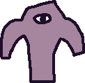

Snow Bros en 4 horas: aprende juegos 2D con KAPLAY construyendo un MVP el Día 1 y subiéndolo de nivel el Día 2. Todo el material está aquí abajo — sin git, sin Node, solo navegador.
Hub + 6 salas con micro-demos en vivo (sprites, mundo, vida, partículas y jefe) y zoom en cada solución.
Jugar →Hub + 5 salas de teoría con retos y micro-demos jugables. La parte que se proyecta el primer día.
Jugar →Plantilla con el escenario montado y 4 TODOs: es el juego que cada equipo construye y conserva.
Abrir →El MVP completo (física, colisiones, marcador y victoria): plan B si un equipo se queda atascado.
Abrir →Kit de enseñanza: bloques reducidos para pegar en el starter mientras el instructor va marcando el ritmo.
Abrir →La referencia final con parallax, jefe, partículas y récord local: todo etiquetado para ver qué pega y qué se escribe.
Abrir →dt(), body(), isGrounded()onCollide: patrulla, pisotón vs choque lateraltext() y META 1000puntos >= 1000anchor("bot") y colisión por basehealth() + ítem curativo y jefe con proyectilesgetData/setData y showcase finalLos juegos usan teclado: mejor en ordenador (el móvil no lleva teclas). La presentación está pensada para proyectar.